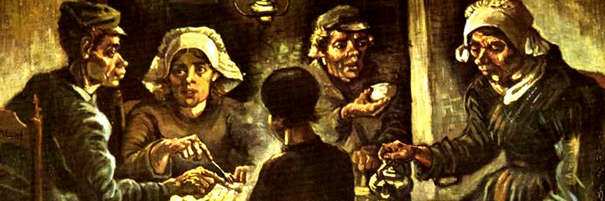

The Potato Eaters
Van Gogh saw the Potato Eaters as a showpiece, for which he deliberately chose a difficult composition to prove he was on his way to becoming a good figure painter. The painting had to depict the harsh reality of country life, so he gave the peasants coarse faces and bony, working hands. He wanted to show in this way that they ‘have tilled the earth themselves with these hands they are putting in the dish ... that they have thus honestly earned their food’.
He painted the five figures in earth colours – ‘something like the colour of a really dusty potato, unpeeled of course’. The message of the painting was more important to Van Gogh than correct anatomy or technical perfection. He was very pleased with the result: yet his painting drew considerable criticism because its colours were so dark and the figures full of mistakes. Nowadays, the Potato Eaters is one of Van Gogh’s most famous works.